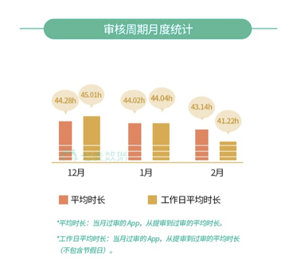
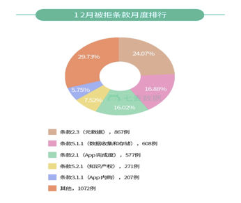
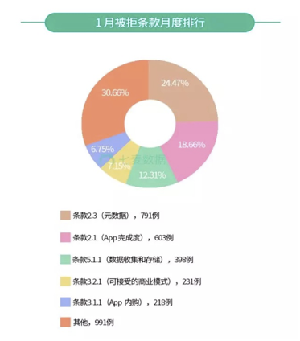
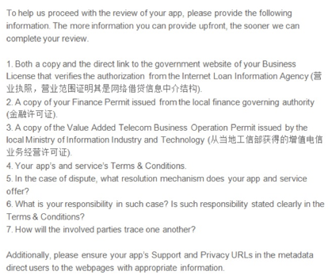
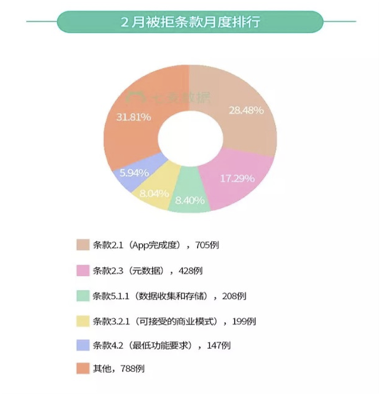
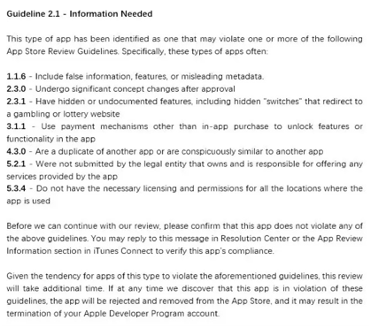

从事过APP运营的开发者们，可能都听说过苹果马甲包。而对从事棋牌游戏行业的创业者来说，苹果马甲包的重要性更是不言而喻。尤其是去年棋牌马甲包大规模下架事件，更是让众多棋牌运营商损失惨重。那么，有没有什么方法能够解决苹果马甲包审核的问题呢？在此之前，我们需要先了解苹果审核的规则。
机审和人工审核
和众多平台审核的机制类似，苹果审核有机审和人工审核两部分。包上传后首先进入的是预审，会被扫描API等，没问题的话才会在iTC里出现 然后才可以提交至 Waiting。
在审核前期，也就是 Waiting For Review（等待审核）阶段一般是机审，机审不通过则直接被拒，通过后才会进入人工审核，这个阶段主要看的是App的元数据，例如标题、描述、截图等，以及检测App的功能使用情况，常遇到的ipv6也在此处检测。
2、审核时间逐渐缩短，但延期审核现象增多
虽然大家一直在吐槽苹果的审核时间，但相比于之前，例如7~8天阶段、3~4天阶段，现在已经很不错了。而且通过近三个月的审核数据对比，App审核的周期又有了进一步缩短的趋势。不过现在又出现了一个现象或者说处罚方式——延期审核。

延期审核一般针对的是大量同种类的App，比如房卡类棋牌游戏（斗地主、麻将类），还有涉及敏感题材的App，比如金融、彩票、VPN等。特别是对于游戏，苹果已经摸清了此类App开发者的套路（马甲包、隐藏支付等），但由于一些开发者隐藏工作做得好，苹果又无法拿到确凿证据，所以只能故意拖延。如果被延期轻则需要十几天，重则拖延1个月甚至几个月。
针对延期，我们有什么好的解决办法呢？其实如果APP没有明显违规，除了打电话，在iTC后台点【联系我们】这些方式外，还有一些稍微冒险的方式，申诉或加速审核。如果这两个方式还不行，又不想等，果断换账号重新提包！
3、苹果审核侧重点不断调整，且新的被拒理由层出不穷
苹果审核侧重点不断调整，且新的被拒理由层出不穷。用这句话来形容近期苹果的审核应该不会有人反对吧?
这个现象我们从近3个月被拒条款排行榜即可窥得一斑。当然这里所说的“新的被拒理由”有些是一直存在的，只是没有侧重这方面审核或者说审核没有升级到这一步而已。下面结合数据分析一下，里面会涉及一些被拒现象的分析。
①如下图所示，2017年12月，在统计的所有样本数据中，条款2.3（元数据问题）占据近乎四分之一的比例；其次是条款5.1.1（主要是用户隐私问题），占比约16.88%；而条款2.1（主要是App完成度问题，此时被拒大礼包还没集中出现）以577例居第三。除此之外，Top5中还有5.2.1。

这里说一下5.2.1吧，在因该条款被拒的App中，金融理财类App占比较大，而关于此类问题的处理方式大家一般采取的是买账号、代上架然后在线转移、套壳然后采用登录做区分等方式、PS等。不过随着越来越多人使用，和监管的力度的加强，PS、套壳等过审几率已经没有以前高了。
②在2018年1月被拒条款排行中，条款2.3（元数据）继续位居榜首，紧跟其后的是原本在2017年12月排在第二名的条款2.1（App 完成度）。而新晋条款3.2.1以231例，7.15% 的比例成为第四名。

在因3.2.1被拒的App中，很多人是收到了下方的内容，要求提供营业执照、金融许可证等7项内容。对于3.2.1，现在已经出现了待操作、过审，我简单说一下过审的App大体都做了啥吧！

1-3条要求的证照直接上传或放在附件中。然后提供营业执照时，在营业执照中标出了营业范围，例如证明经营范围里有网络借贷信息中介服务等。
提供了该营业执照在国家企业信用信息公示系统（网址：http://www.gsxt.gov.cn/index.html）的查询方式。提供增值电信业务经营许可证时还提供了增值电信业务经营许可证查询链接:https://tsm.miit.gov.cn/pages/home.aspx
此外，虽然其他4点不如前3点重要，但也进行一一回复。
第4条是要求给出平台的服务协议和条款；第5条是如发生争议，应用程序和服务提供什么样的解决机制；第6条需要说明是在这种情况下有什么责任，这些责任是否在条款中明确规定；第7条是涉及的责任各方如何追查。把这些内容都按照要求提交，并在截图中标明了重点。
此外还提供了产品的介绍、与支付公司合作协议。其他大家可以自己去探索一下，提示一点：官方材料尽可能多。
③而在最近的2月被拒条款排行中，条款 2.1（主要是被拒大礼包），以28.48% 的比例占据了榜首。紧跟其后的是条款2.3（元数据）。新晋条款 4.2（最低功能要求）以147例，5.94% 的比例成为第五名。

因条款 4.2被拒的App多数是因为功能过于简单或缺失或审核人员没有get核心功能。对于这一问题解决方式除了按要求添加些小功能，对细节进行优化外，也可以考虑解释产品可用性，例如用户的需求，和其他产品区别等。
还有一点很想和大家一起讨论一下。这阵子收到的人不少，就是1月28日集中出现的、叫很多人叫苦不迭的2.1大礼包。1.1.6、2.3、2.3.1、3.1.1、4.3等都被罗列其中，而审核人员的要求是：你自己去排查吧！在被拒的App中，不仅包括金融，还有电商、游戏等。

上图是比较普遍的2.1大礼包，我们先看一下每条被拒理由和常规解决方式吧！
1.1.6–包含虚假信息，功能或误导性元数据
一般是因为标题或者icon和截图等有误导的嫌疑，或有些关键词是被苹果列入黑名单的，例如红包包、话费等，但审核条款又没有明确指出。对于上述情况的解决办法是使用保守的文案或素材。
2.3.0– 含有不经审核也可更改App功能
如改变App功能的热更新，这种情况需要把热更新去除,或者对热更新模块代码做深度混淆处理!
2.3.1– 含有隐藏功能或为记录的功能，包括定向到赌博或彩票网站的开关。
常规解决方式：去除隐藏功能模块代码或将需要隐藏功能的代码及定向跳转链接网址做混淆处理，适当增加逻辑复杂度。3.1.1 –应用内购以外的支付机制来解锁App中的功能或功能。
对于第三方支付,尽可能避免使用易扫描的SDK版本,推荐使用H5版本支付。支付跳转链接相应的做屏蔽混淆处理。
4.3.0–是另一款应用的复制品，或与另一款应用明显相似。
被认为是重复App或马甲包，变更UI和名称，填充无用代码等，下面会具体讲。
5.2.1–未由拥有并负责提供该应用程序提供的任何服务的法律实体提交。
未提供 App 上架所需的行业资质，比如：金融营业许可证、游戏版号等。这个上面讲过些常规方式。
5.3.4– 含有货币游戏（如：体育下注、赌场游戏等），但未提供相关许可资质。
同上，提供资质，审核时最好不要勾选中国区，或使用海外账号。
①如果App没有违反上述任何一点，其实直接回复没有违反即可！当然，如果想增加过审几率也可以按照邮件中罗列的审核指南一一进行解释，说明自家 App 并不存在这些规则中的问题，尽可能描述详细。如果回复后并没有推进，可以配合加速审核或审核申诉，不过需要注意，加速审核次数不要用太多，审核申诉可能引来审核团队更严格的审核，需要谨慎。
注：2.1刚出现的时，即使App有违规行为直接回复也是有可能过审的，但是目前有点用烂了，苹果那边应该是敏感了，目前过审几率极低，而且有可能被延期。
②如果App违反上述某点，建议认真修改后回复苹果，重点看上次或历史被拒记录，确定回复侧重点。如果回复后并没有推进，也可以配合加速审核或审核申诉，不过有延期等风险。
③除了这些方法，有人还用过一种方式过审，即用新账号上传，上面说过“苹果审核人员应该并没有开始审核，仅是针对App的历史违规记录或开发者账号的违规记录等发送了这封邮件。”但这种方式并不适合所有App，而且苹果可能会发现新账号的App和旧账号以及旧App的关系而产生连带处罚，要看运气。
下面是小助手收集的几个问题，在这里做一下回复：
A、2.1有解吗？有，目前出现了代过审，具体操作方式都是私下进行的，和5.2.1和3.2.1一样，大家都去用，反复刺激苹果，审核机制又会被更改。
B、只有更新的App才有可能收到被拒大礼包？其实不是，收到这封邮件的App中既有新提交的App，也有要更新版本的App。
C、2.1是机审？目前数据和被拒的现象来看，主要是机审，人工审核比例不高，多数是针对的代码、App或开发者账号的历史违规记录等发送的邮件消息。
pp的历史违规行为和账号的历史违规行为都有可能触发2.1大礼包。
当然除了以上被拒原因外，4.3（重复App）、IPv6、3.2（f）、PLA1.2等仍是被拒常见原因！下面说一下4.3。
4.3主要针对的是重复App，就是马甲包，4.3被拒主要在机审阶段，解决这个问题通常采用的方式简单来说分以下几步：
A、改名字；
B、修改素材及UI色调等，例如修改icon，修改主色调；
C、修改功能界面等，可改功能可做小开关；
D、填充代码（最好50%以上）或注释块；
除以上步骤外，还需要注意相同的马甲包提交至少要间隔一天以上，避免被同一个审核员看到。当然，还可以配合着升级套路：升级version（版本）号、换bundle id，换开发者账号再提交审核。
如果以上步骤不奏效，还可以尝试采用修改应用价格、发布地区、产品分类等方式。不过注意，App上架后价格、发布地区是可以修改的，但产品分类不可以，对这个有要求的慎用！
IPv6的话，确认代码没问题的话，重新提交1~2次就好了。多数是审核人员所在的网络环境导致的问题，如果不放心，重新提交时将截图或拍下视频放附件里或直接向苹果申诉。如果 App本身有问题，例如不兼容 IPv6，最好的办法是让App兼容 IPv6 或通过升级服务器来支持IPv6，其他代码问题问问技术就OK了。（未完待续）纹桃科技致力于棋牌游戏开发15年，拥有大量成功案例。
想开发一款迅速盈利的棋牌游戏，欢迎咨询热线电话：18711739336

识别二维码咨询更多棋牌问题

游戏产品
PRODUCTS

售后服务
SERVICE

技术支持
TECHNOLOGY

运营指导
OPERATING